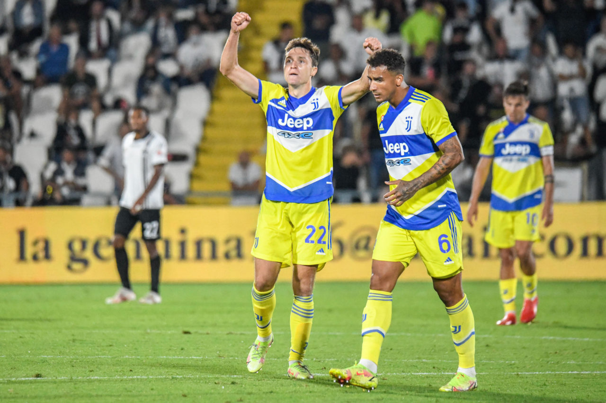

Juventus Säsongen 21-22
Juventus gick mot sin femte raka match utan seger i Serie A. Då klev Federico Chiesa och Matthijs De Ligt fram.
Det var ett pressat Juventus som under onsdagskvällen gästade Spezia. Den gamla damen stod nämligen utan seger efter de fyra inledande omgångarna i Serie A och var därför i stort poängbehov. Precis som i senaste matchen mot Milan valde tränaren Massimiliano Allegri att starta med Dejan Kulusevski på bänken. I stället startade Paulo Dybala tillsammans med nyförvärvet Moise Kean på topp. Juventus öppnade matchen bäst och hade inledningsvis ett stort bollinnehav - vilket till slut gav utdelning. Knappa halvtimmen var spelad när Adrien Rabiot nickade ner en boll till Moise Kean som kunde skjuta in 0-1 vid bortre stolpen.
Gästernas ledning blev dock kortvarig. Drygt fem minuter efter baklängesmålet fick Emmanuel Gyasi bollen utanför straffområdet till vänster. Yttern vek inåt i planen och avlossade ett skott som gick in i det bortre krysset. 1-1, och kvitterat för Spezia. Spezia stannade inte vid kvitteringen, i början av andra halvlek tog men även ledningen. Juventus hade bollen på offensiv planhalva, men tappade den. Spezia ställde om i en sylvass kontring som Janis Antiste förvaltade fram till 2-1. Med mindre än halvtimmen kvar att spela kvitterade Juventus till 2-2. Federico Chiesa bröt igenom Spezia-försvaret och tryckte in kvitteringen. Gästerna fullbordade vändningen drygt fem minuter senare. Efter en hörna hamnade bollen hos Matthijs De Ligt som laddade och sköt in 2-3 till Juventus. Dejan Kulusevski byttes in med fem minuter kvar att spela, men lyckades inte göra avtryck. Juventus besegrade till slut Spezia med 3-2. Storklubben tog därmed säsongens första seger och undvek ytterligare en missräkning.
Startelvor:
Spezia: Zoet - Amian, Hristov, Nikolaou, Ferrer - Bourabia, Sala, Bastoni - Salcedo, Manaj, Gyasi.
Juventus: Szczesny - Danilo, De Ligt, Bonucci, Sandro - Chiesa, Rabiot, Locatelli, Bentancur - Dybala, Kean.